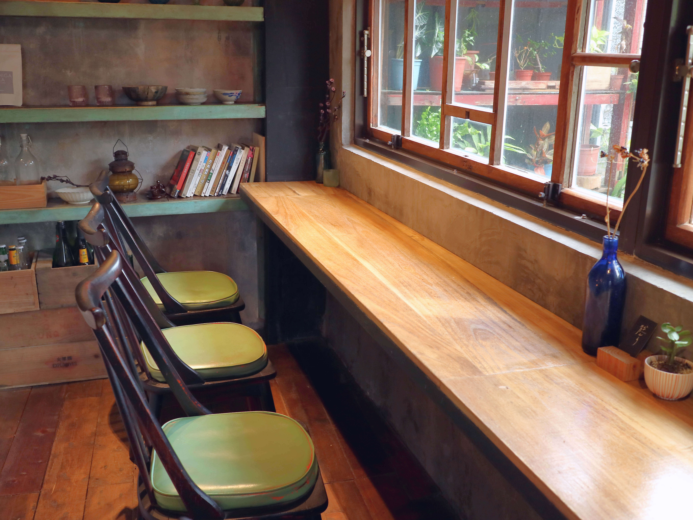
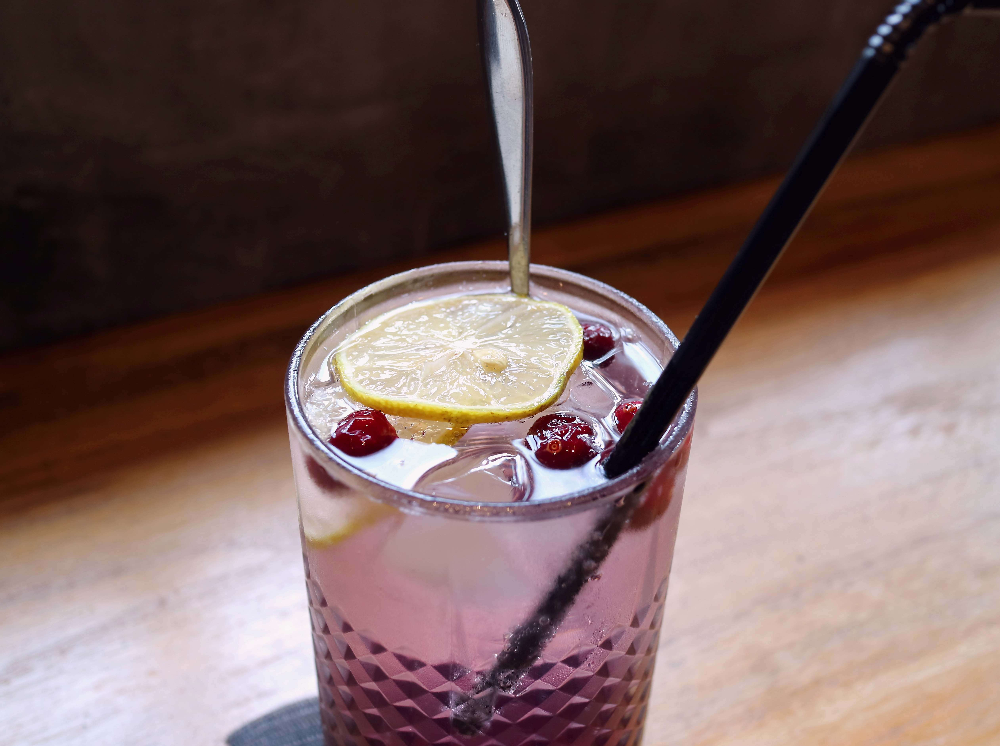
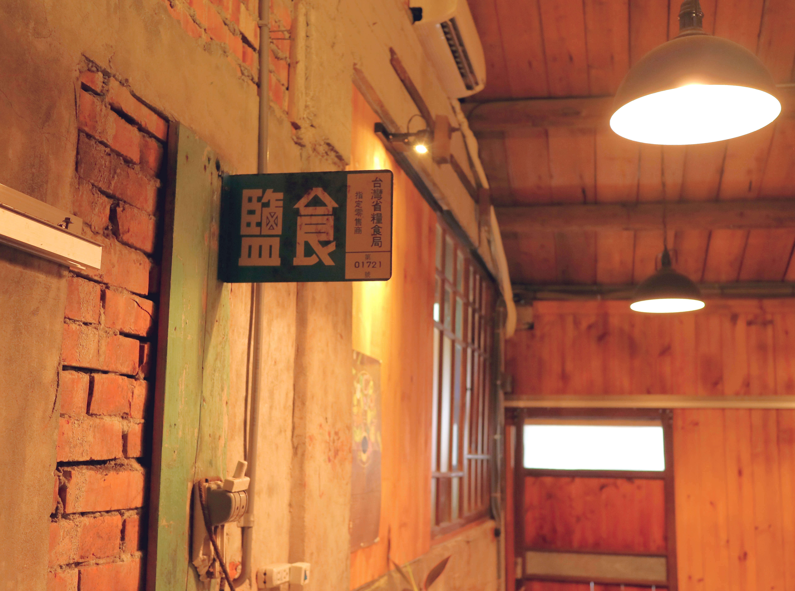

三年前和老屋在山城裡相遇，或許是老屋挑選了我們。
經過了201天的整建後雖然它依舊是一幢舊房子，但屋內多了咖啡味。
有時路過的遊客會在老屋門前留影。這條老街沒有人潮。
這樣很好，老房子會一直這樣安靜地守著老街。因為它現在是一間咖啡店。
節錄自散散步咖啡粉絲頁
隱居山城的老宅咖啡店
如果你有仔細地瀏覽過散散步咖啡的粉絲頁，會發現有段文字不斷地映入眼簾：
靠google導航肯定找不到我們，咖啡館的位置在『金瓜石醫院舊址廣場』下方20公尺。地址是：祈堂路172號。
開車請從五號路轉進來，車可以停在時雨中學操場旁。
搭客運前來請在『黃金博物館站』下車。
進入園區後找到派出所問警察杯杯『金瓜石醫院舊址廣場』在哪兒，找得到廣場就找得到我們。
節錄自散散步咖啡粉絲頁
直到造訪過散散步咖啡許久之後，我才在他們的粉絲頁上發現這段說明文。
說來有趣，當初能抵達散散步咖啡，既不是去查粉絲頁，也不是問警察杯杯，而是靠著一股無聊的堅持，在小小的手機螢幕上，用手指一點一點把路線給「拼」出來的。
最好記的路線是進入雨聲中學和黃金博物館之間的五號路，沿著時中學的圍牆步行，走過學校的籃球場後，就能看到散散步那幢二層樓的老宅矗立在眼前了。
散散步咖啡的確難找，但這年頭，隱密又好喝的老宅咖啡店不少，只要咖啡香，難找一點又算得了什麼呢？
躲避人潮的僻靜角落
眾所周知，不論平日假日，九份永遠是人潮洶湧，彷彿全世界的旅客都專程搭飛機擠到這座小山城中。基山老街上，操著各國語言的遊客們萬頭攢動，興奮地指指點點。但身為台灣人，難得有個浮生半日閒可偷，卻無奈地落入這個令人心煩意亂的嘈雜街頭，連停個車都比在市區費勁得多。

萬幸在九份的更深處，散散步咖啡被創造了出來。也只有九份這樣的地形，能藏得住這兩層樓高的老宅咖啡館，不是熟門熟路的老客人、登山客，極難尋得這個僻靜咖啡店。
在散散步咖啡靜坐一會兒後，你就能漸漸地感受到九份真正的魅力所在，蟬鳴鳥叫、雲霧繚繞，窗外的露珠凝結在葉片上，從清晨到晌午，還未從葉尖滑落；微風從窗台上輕輕躍入老宅，你可以深深地吸進一口清新，與都市的空氣有著天壤之別。
咖啡清香
散散步沒有調味過的拿鐵或卡布奇諾，只有黑咖啡。如果你有興趣，老闆會仔細地和你解釋每種咖啡天然的香氣和味道，可能有果香、酒香或茶香，箇中滋味，飲者自知。整體來說，咖啡的味道十分清澈，無酸無苦，喝到杯底時，有股淡淡的回甘。
有興趣的話，也可以嚐嚐別的無咖啡因飲料。

山中無甲子
唯一美中不足的是，散散步咖啡看不到九份特有的海景，不過對於追求清靜和咖啡的絕大部分客人來說，這不算什麼，一待下來就是大半個下午。只有少數的客人，在匆匆喝完咖啡後，和老闆問了下個目的地的路線，就捨棄了眼前的寧靜，離開了。

若論環境和咖啡品質，散散步咖啡無疑值得用整個下午的時光來消磨的，除了咖啡，甜點也非常熱門，在此就不多作贅述，不妨自行前來品嚐。咖啡若喝罷，沿著門前的祈堂小路繼續往山中走，小路兩旁是依山建造的老房，這是九份特有的建築景觀，而且鮮少遊客，別有一番景色。
店家資訊
散散步 / 老宅。岩屋。閣樓。小洋樓
地址：新北市瑞芳區祈堂路172號
電話：0981-885-933
營業時間：
週二、週三公休
週四 ~ 週ㄧ：13:30~18:30
推薦：
哥倫比亞雪峰莊園
印尼金色百林莊園
肯亞 AA Top 馬希加處理場
蘋果派
- 附註： 真的找不到地點，就直接打電話問吧！